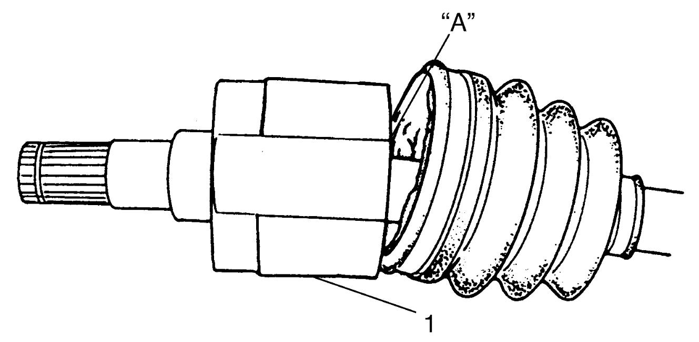

3A
| Front Drive Shaft Assembly Disassembly and Reassembly |
Disassembly
NOTICE:
Disassembly of the wheel side joint or the tripod joint can cause performance problems.
If anything abnormal (damage, noise, etc.) is found with either of these joints, replace the joint as an assembly.
Differential side joint
1)Remove boot bands according to the following procedure.

Other than M16A-M/T model and D16AA-M/T model
•Using nose pliers, disengage hooks of boot big band (1) and remove band. "Expand image")
M16A-M/T model and D16AA-M/T model
•Using flat-bladed screwdriver (1) or the like, release caulking (2) of boot big band (3). "Expand image")
2)Using flat-bladed screwdriver (1) or the like, release caulking (2) of differential side (transfer side or drive intermediate shaft side) small band (3).

 "Expand image")
3)Remove differential side (transfer side or drive intermediate shaft side) joint housing from tripod joint.
4)Wipe off grease from shaft, and use snap ring pliers (2) to take off circlip (1).
 "Expand image")
5)Use 3-arm puller (2) to remove tripod joint (1).
NOTICE:
Except for the housing, washing the tripod joint parts with a washing solution may cause problems with the joint.
Do not use a washing solution to clean any tripod joint parts other than the housing. Use a cloth to remove grease from tripod joints.
 "Expand image")
6)Pull out differential side (transfer side or drive intermediate shaft side) boot from shaft.
7)For right side drive shaft of K14C-2WD model, remove damper No.2 (1). Use flat-bladed screwdriver (2) or the like to release caulking (3) of damper band (4).
NOTE:
Right side drive shaft of K14C-2WD model is equipped with two dampers.
8)For models M16A-A/T, K14C and D16AA-Twin clutch system at right side drive shaft, remove wheel side damper No.1 (5) in the same manner as in Step 7).
 "Expand image")
 "Expand image")
Wheel side joint
1)Using flat-bladed screwdriver (1) or the like, release caulking (2) of wheel side boot big band and small band (3), and then pull out wheel side boot from shaft.
Reassembly
Judging from abnormality noted before disassembly and what is found through visual check of component parts after disassembly, prepare replacing parts and proceed to reassembly.
Check that wheel side joint assembly (1) and housing of tripod joint (2) are washed thoroughly and air-dried.
NOTICE:
Joints may not perform as designed if proper cleaning and lubrication precautions are not taken.
•Do not wash boots (3) with solvents such as gasoline or kerosene. Washing boots with these solvents causes deterioration of the boots.
•Lubricate joints with the specified amount of the specified grease.
•Lubricate joints with the specified amount of the specified grease.
 "Expand image")
| [A]: | Wheel side |
| [B]: | Differential side (transfer side or drive intermediate shaft side) |
Wheel side joint
1)Wash disassembled parts except boots. After washing parts, air-dry them completely.
2)Clean boots with shop cloth.
3)Apply grease from the service kit to wheel side joint.
Grease specification for front drive shaft wheel side joint
M16A-M/T model: 55 – 75 g (1.94 – 2.64 oz)
M16A-A/T model: 90 g (3.17 oz)
D16AA-M/T model: 110 – 130 g (3.88 – 4.58 oz)
D16AA-Twin clutch system model and K14C model: 125 g (4.41 oz)
4)Install wheel side boot on shaft.
5)Insert flat-bladed screwdriver into boot (2) and allow air to enter boot so that air pressure in boot becomes the same as the atmospheric pressure.
 "Expand image")
| 1. | Wheel side joint |
6)Place new wheel side boot big band (3) and small band (4) onto boot putting band outer end (1) against forward rotation (2) as shown in figure.
 "Expand image")
7)Fasten boot bands (1) using special tool as shown in figure.
NOTICE:
Squeezing or distorting the boot will reduce its durability.
Do not force air out of the boot by squeezing or distorting it when fastening it with boot bands.
Boot band fastening distance “a”
M16A-M/T model and D16AA-M/T model: 1.2 – 4.0 mm (0.05 – 0.16 in.)
K14C model and D16AA-Twin clutch system model: 0.5 – 1.5 mm (0.02 – 0.06 in.)
 "Expand image")
8)Install damper No.1 to specified position on drive shaft.
Drive shaft damper No.1 installing position (distance between wheel side joint end and damper end)
| Engine type | Drive train type | Drive shaft | Fixing position “a” |
|---|---|---|---|
| M16A model | 2WD | Right side | 406 – 412 mm (16.0 – 16.2 in.) |
| 4WD | Right side | 226 – 232 mm (8.90 – 9.13 in.) |
|
| 2WD/4WD (M/T model) | Left side | 251 – 257 mm (9.90 – 10.1 in.) |
|
| 2WD/4WD (A/T model) | Left side | 243.5 – 249.5 mm (9.587 – 9.823 in.) |
|
| K14C model and D16AA model | 2WD/4WD | Right side | 229 – 235 mm (9.02 – 9.25 in.) |
| 2WD/4WD | Left side | 224 – 230 mm (8.82 – 9.05 in.) |
 "Expand image")
9)For models M16A-A/T, K14C and D16AA-Twin clutch system at right side drive shaft, place new damper band (1) onto damper putting band outer end (2) against forward rotation (3) as shown in figure.
 "Expand image")
10)For models M16A-A/T, K14C and D16AA-Twin clutch system at right side drive shaft, fasten damper bands (1) using special tool as shown in figure.
Damper band fastening distance
“a”: 0.5 – 1.5 mm (0.02 – 0.06 in.)
 "Expand image")
11)For right side drive shaft of K14C-2WD model, install damper No.2 to specified position on drive shaft.
Drive shaft damper No.2 installing position (distance between wheel side joint end and damper end)
“a”: 442 – 448 mm (17.5 – 17.6 in.)
 "Expand image")
12)Place new damper band (1) onto damper No.2 in the same manner as in Step 9).
13)Fasten damper band (1) using special tool as shown in figure.
Boot band fastening Distance
“a”: 0.5 – 1.5 mm (0.02 – 0.06 in.)
Differential side joint
1)Wash disassembled parts except boots. After washing parts, air-dry them completely.
2)Clean boots with shop cloth.
3)Install differential side (transfer side or drive intermediate shaft side) boot on shaft.
4)Install tripod joint (1) on shaft using special tool with hammer, directing its chamfered spline (3) toward wheel side, and then fasten tripod joint with new circlip (2) using snap ring pliers (4).
 "Expand image")
 "Expand image")
5)Apply grease “A” from the service kit to tripod joint and joint housing (1).
Grease specification for differential side (transfer side or drive intermediate shaft side) joint of front drive shaft
| Engine type | Transaxle type | Drive train type | Grease amount |
|---|---|---|---|
| M16A | M/T | 2WD/4WD | Right and left sides: 90 – 110 g (3.17 – 3.88 oz) |
| A/T | 2WD/4WD | Right and left sides: 150 g (5.29 oz) |
|
| K14C | M/T | 2WD/4WD | Right and left sides: 175 g (6.17 oz) |
| A/T | 2WD | Right sides: 150 g (5.29 oz) Left sides: 126 g (4.44 oz) |
|
| 4WD | Right and left sides: 150 g (5.29 oz) |
||
| D16AA |
M/T | 2WD/4WD | Right and left sides: 140 – 160 g (4.94 – 5.64 oz) |
| Twin clutch system | 2WD/4WD | Right and left sides: 180 g (6.35 oz) |

 "Expand image")
6)Fit boot (1) to grooves of shaft and differential side joint housing (2) and/or transfer side (or drive intermediate shaft side) joint housing (3).
7)Insert flat-bladed screwdriver or the like into boot (1) and allow air to enter boot so that air pressure in boot becomes the same as atmospheric pressure at boot fixing position.
Drive shaft boot fixing position (distance between differential side joint end and boot small band center)
| Engine type | Transaxle type | Drive train type | Fixing position “a” |
|---|---|---|---|
| M16A | M/T | 2WD | Right and left sides: 177.9 – 187.9 mm (7.004 – 7.397 in.) |
| 4WD | Right side: 195.0 – 205.0 mm (7.678 – 8.070 in.) Left side: 177.9 – 187.9 mm (7.004 – 7.397 in.) |
||
| A/T | 2WD | Right and Left sides: 167.3 – 173.3 mm (6.587 – 6.823 in.) |
|
| 4WD | Right side: 177.3 – 183.7 mm (6.980 – 7.232 in.) Left side: 167.3 – 173.3 mm (6.587 – 6.823 in.) |
||
| K14C | M/T | 2WD | Right and Left sides: 169.5 – 175.5 mm (6.674 – 6.909 in.) |
| 4WD | Right side: 183.5 – 189.5 mm (7.225 – 7.460 in.) Left side: 169.5 – 175.5 mm (6.674 – 6.909 in.) |
||
| A/T | 2WD | Right side: 171.4 – 177.4 mm (6.749 – 6.984 in.) Left side: 194.1 – 200.1 mm (7.642 – 7.877 in.) |
|
| 4WD | Right side: 182.4 – 188.4 mm (7.182 – 7.417 in.) Left side: 194.1 – 200.1 mm (7.642 – 7.877 in.) |
||
| D16AA | M/T | 2WD | Right side: 201.4 – 211.4 mm (7.930 – 8.322 in.) Left side: 181.9 – 191.9 mm (7.162 – 7.555 in.) |
| 4WD | |||
| Twin clutch system | 4WD | Right side: 198.3 – 204.3 mm (7.808 – 8.043 in.) Left side: 171.9 – 177.9 mm (6.768 – 7.003 in.) |
 "Expand image")
 "Expand image")
| [A]: | Differential side |
| [B]: | Transfer side or drive intermediate shaft side |
8)Place new boot bands onto boot putting each band outer end (1) against forward rotation (2) as shown in figure.
M16A-M/T model and D16AA-M/T model
 "Expand image")
Other than M16A-M/T model and D16AA-M/T model
 "Expand image")
9)Fasten boot big band and boot small band noting the following points.


NOTE:
Squeezing or distorting the boot will reduce its durability.
Do not force air out of the boot by squeezing or distorting it when fastening it with boot bands.
Install each boot band using the appropriate method referring to the following table
| Type | Band | Method |
|---|---|---|
| M16A-M/T model and D16AA-M/T model | Big band | a |
| Small band | a | |
| Other than M16A-M/T model and D16AA-M/T model | Big band | b |
| Small band | a |
Method a
•Fasten boot band (1) using special tool as shown in figure.Boot band fastening distance “a”
M16A-M/T model and D16AA-M/T model: 1.2 – 4.0 mm (0.05 – 0.16 in.)
Other than M16A-M/T model and D16AA-M/T model: 0.5 – 1.5 mm (0.02 – 0.06 in.)
 "Expand image")
Method b
•Fasten boot band (1) by drawing hooks (2) with special tool and engage hooks (3) as shown in figure. "Expand image")